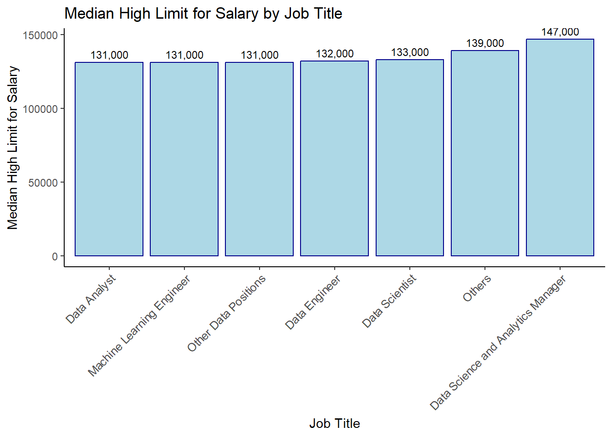

Glassdoor is an online platform where former or new employees can comment on companies and is also used for job search.
In their website, they define themselves as: “Glassdoor is one of the world’s largest job and recruiting sites. We pride ourselves on helping people find a job and company they love; in fact, it’s our mission. Our company was built on the foundation of increasing workplace transparency. With that in mind, we have developed numerous tools to help job seekers make more informed career decisions.”
Data Description
Data is obtained from Kaggle, in which, the user claims that the data is obtained from Glassdoor.com by using web scrapping.
The variables in this data set are defined as follows:
Job Title: Title of the job posting
Salary Estimation: Salary range for that particular job
Job Description: This contains the full description of that job
Rating: Rating of that post
Company: Name of company
Location: Location of the company
Headquarter: Location of the headquater
Size: Total employee in that company
Type of ownership: Describes the company type i.e non-profit/public/private farm etc
Industry, Sector: Field applicant will work in
Revenue: Total revenue of the company
Import the Data
Let’s start by importing the data. Fist, import the required libraries. If you don’t already have them, you can use install.packages() function.
library(tidyverse)
Warning: package 'tidyverse' was built under R version 4.2.3
Warning: package 'ggplot2' was built under R version 4.2.3
Warning: package 'tidyr' was built under R version 4.2.3
Warning: package 'readr' was built under R version 4.2.3
Warning: package 'purrr' was built under R version 4.2.3
Warning: package 'stringr' was built under R version 4.2.3
Warning: package 'forcats' was built under R version 4.2.3
Warning: package 'lubridate' was built under R version 4.2.3
── Attaching core tidyverse packages ──────────────────────── tidyverse 2.0.0 ──
✔ dplyr 1.0.10 ✔ readr 2.1.4
✔ forcats 1.0.0 ✔ stringr 1.5.0
✔ ggplot2 3.4.4 ✔ tibble 3.1.8
✔ lubridate 1.9.3 ✔ tidyr 1.3.0
✔ purrr 1.0.1
── Conflicts ────────────────────────────────────────── tidyverse_conflicts() ──
✖ dplyr::filter() masks stats::filter()
✖ dplyr::lag() masks stats::lag()
ℹ Use the conflicted package (<http://conflicted.r-lib.org/>) to force all conflicts to become errors
Rows: 672 Columns: 15
── Column specification ────────────────────────────────────────────────────────
Delimiter: ","
chr (12): Job Title, Salary Estimate, Job Description, Company Name, Locatio...
dbl (3): index, Rating, Founded
ℹ Use `spec()` to retrieve the full column specification for this data.
ℹ Specify the column types or set `show_col_types = FALSE` to quiet this message.
Let’s start by investigating our dataset a little bit, by getting a glimpse and see the structure of the data:
index Job Title Salary Estimate Job Description
Min. : 0.0 Length:672 Length:672 Length:672
1st Qu.:167.8 Class :character Class :character Class :character
Median :335.5 Mode :character Mode :character Mode :character
Mean :335.5
3rd Qu.:503.2
Max. :671.0
Rating Company Name Location Headquarters
Min. :-1.000 Length:672 Length:672 Length:672
1st Qu.: 3.300 Class :character Class :character Class :character
Median : 3.800 Mode :character Mode :character Mode :character
Mean : 3.519
3rd Qu.: 4.300
Max. : 5.000
Size Founded Type of ownership Industry
Length:672 Min. : -1 Length:672 Length:672
Class :character 1st Qu.:1918 Class :character Class :character
Mode :character Median :1995 Mode :character Mode :character
Mean :1636
3rd Qu.:2009
Max. :2019
Sector Revenue Competitors
Length:672 Length:672 Length:672
Class :character Class :character Class :character
Mode :character Mode :character Mode :character
From both glimpse() and summary() outputs, we can see that, categorical variables are in character form. We will investigate them one by one later on.
But first, let’s change the column names that have blank spaces so that it will be much easy to make the analyses later.
index Job_Title Salary_Estimate Job_Description
Min. : 0.0 Length:672 Length:672 Length:672
1st Qu.:167.8 Class :character Class :character Class :character
Median :335.5 Mode :character Mode :character Mode :character
Mean :335.5
3rd Qu.:503.2
Max. :671.0
Rating Company_Name Location Headquarters
Min. :-1.000 Length:672 Length:672 Length:672
1st Qu.: 3.300 Class :character Class :character Class :character
Median : 3.800 Mode :character Mode :character Mode :character
Mean : 3.519
3rd Qu.: 4.300
Max. : 5.000
Size Founded Type_of_Ownership Industry
Length:672 Min. : -1 Length:672 Length:672
Class :character 1st Qu.:1918 Class :character Class :character
Mode :character Median :1995 Mode :character Mode :character
Mean :1636
3rd Qu.:2009
Max. :2019
Sector Revenue Competitors
Length:672 Length:672 Length:672
Class :character Class :character Class :character
Mode :character Mode :character Mode :character
From our summary, we can also see some strange values are present in the data. For instance there are some rows marked as “-1” in the Headquarters, Founded.
Investigating the Columns
Let’s investigate the columns one by one:
Index
Index column is not necessary for us, so we will remove it from our data set.
Uncleaned_DS_jobs$index <-NULL
Rating
We realized that from the summary, Rating has a minimum value as -1, but the rating should be between 1 to 5.
We need to fix that problem.
To fix this, first we need to look how many data are there with Rating = -1:
sum(Uncleaned_DS_jobs$Rating ==-1)
[1] 50
We have 50 values with Rating = -1. Rating variable should not be -1. So firstly for the rating variable we give change -1 to 0.
Warning: The dot-dot notation (`..count..`) was deprecated in ggplot2 3.4.0.
ℹ Please use `after_stat(count)` instead.
As can be seen from the graph it is hard to read the x axis names so to solve this problem, we picked the 10 industries that have the most frequencies in the data and draw a plot regarding these industries.
# Reorder the levels of Industry based on frequencyplot_data <- Uncleaned_DS_jobsplot_data$Industry <-factor(plot_data$Industry, levels = top10_industries$Industry)# Filter data to include only the top 10 industriesfiltered_data <- plot_data %>%filter(Industry %in% top10_industries$Industry)industry_plot_top10 <-ggplot(filtered_data, aes(x = Industry)) +labs(title ="Distribution of Top 10 Industries", x ="Industry", subtitle ="") +geom_bar(colour ="darkblue", fill ="lightblue") +geom_text(stat ='count', aes(label = ..count..), vjust =-0.5, size =2.68) +theme_classic() +theme(axis.text.x =element_text(size =10, angle =45, hjust =1))industry_plot_top10
Sector
Realizing that sector variable also has -1 values.
sum(Uncleaned_DS_jobs$Sector ==-1)
[1] 71
We change -1 values to no information for the sector variable.
# Reorder the levels of Sector based on frequency plot_data <- Uncleaned_DS_jobsplot_data$Sector <-factor(plot_data$Sector, levels = top10_sector$Sector) # Filter data to include only the top 10 sector filtered_data <- plot_data %>%filter(Sector %in% top10_sector$Sector) Sector_plot_top10 <-ggplot(filtered_data, aes(x = Sector)) +labs(title ="Distribution of Top 10 Sector", x ="Sector", subtitle ="") +geom_bar(colour ="darkblue", fill ="lightblue") +geom_text(stat ='count', aes(label = ..count..), vjust =-0.5, size =2.68) +theme_classic() +theme(axis.text.x =element_text(size =10, angle =45, hjust =1)) Sector_plot_top10
Revenue
In revenue column there are some -1 values
sum(Uncleaned_DS_jobs$Revenue ==-1)
[1] 27
And this column has a value called Unknown / Non-Applicable
head(Uncleaned_DS_jobs$Revenue)
[1] "Unknown / Non-Applicable" "$1 to $2 billion (USD)"
[3] "$100 to $500 million (USD)" "$100 to $500 million (USD)"
[5] "Unknown / Non-Applicable" "Unknown / Non-Applicable"
# Reorder the levels of Company names based on frequencyplot_data <- Uncleaned_DS_jobsplot_data$Company_Name <-factor(plot_data$Company_Name, levels = top10_companies$Company_Name)# Filter data to include only the top 10 industriesfiltered_data <- plot_data %>%filter(Company_Name %in% top10_companies$Company_Name)company_plot_top10 <-ggplot(filtered_data, aes(x = Company_Name)) +labs(title ="Distribution of Top 10 Companies", x ="Companu Name", subtitle ="") +geom_bar(colour ="darkblue", fill ="lightblue") +geom_text(stat ='count', aes(label = ..count..), vjust =-0.5, size =2.68) +theme_classic() +theme(axis.text.x =element_text(size =10, angle =45, hjust =1))company_plot_top10
Size
As can be seen from the summary that we have -1 for the Size. But we have unknown category for this variable.
summary(as.factor(Uncleaned_DS_jobs$Size))
-1 1 to 50 employees 10000+ employees
27 86 80
1001 to 5000 employees 201 to 500 employees 5001 to 10000 employees
104 85 61
501 to 1000 employees 51 to 200 employees Unknown
77 135 17
So we can assign “-1” to “Unknown” category for this variable:
1 to 50 employees 10000+ employees 1001 to 5000 employees
86 80 104
201 to 500 employees 5001 to 10000 employees 501 to 1000 employees
85 61 77
51 to 200 employees Unknown
135 44
Histogram of the Size variable:
library(dplyr)# Create a frequency table for Sizesize_counts <-count(Uncleaned_DS_jobs, Size)# Sort the data by count in ascending ordersize_counts <-arrange(size_counts, desc(n))# Create the plotsize_plot <-ggplot(size_counts, aes(x =reorder(Size, n), y = n)) +labs(title ="Distribution of Size of the Companies", x ="Size", y ="Frequency") +geom_col(colour ="darkblue", fill ="lightblue") +geom_text(aes(label = n), vjust =-0.5, size =3) +theme_classic() +theme(axis.text.x =element_text(size =9.2, angle =45, hjust =1))size_plot
Competitors
There are -1 values in Competitors. We don’t know their competitors’ name so we can attribute them to no information
No information
501
Roche, GlaxoSmithKline, Novartis
10
Leidos, CACI International, Booz Allen Hamilton
6
Los Alamos National Laboratory, Battelle, SRI International
6
Battelle, General Atomics, SAIC
3
(Other)
146
San Francisco, CA New York, NY Washington, DC Boston, MA
69 50 26 24
Chicago, IL (Other)
22 481
In the Location variable, we can see that they are written with the state which they are in. So we want to separate them. But,before that, in our data there are some problematic rows:
# A tibble: 7 × 1
Location
<chr>
1 Remote
2 United States
3 Utah
4 New Jersey
5 Texas
6 Patuxent, Anne Arundel, MD
7 California
From this output, we can see that we have “Remote”, “United States”, locations that have the same names as their states; “Utah”, “New Jersey”, “Texas” and “California”, and “Patuxent, Anne Arundel, MD” which is a region for the Anne Arundel county. So, we will add information for this columns firstly, then we will separate the Location and States. For this, we will use str_replace() function.
locationstates_counts <-count(Uncleaned_DS_jobs, Location_State)# Sort the data by count in ascending orderlocationstates_counts <-arrange(locationstates_counts, desc(n))# Create the plotlocationstate_plot <-ggplot(locationstates_counts, aes(x =reorder(Location_State, n), y = n)) +labs(title ="Distribution of States of the Locations of the Companies", x ="States", y ="Frequency") +geom_col(colour ="darkblue", fill ="lightblue") +geom_text(aes(label = n), vjust =-0.5, size =3) +theme_classic() +theme(axis.text.x =element_text(size =9.2, angle =45, hjust =1))locationstate_plot
hqstates_counts <-count(Uncleaned_DS_jobs, Headquarters_State)# Sort the data by count in ascending orderhqstates_counts <-arrange(hqstates_counts, desc(n))# Create the plothqstate_plot <-ggplot(hqstates_counts, aes(x =reorder(Headquarters_State, n), y = n)) +labs(title ="Distribution of States of the Locations of the Headquarters", x ="States", y ="Frequency") +geom_col(colour ="darkblue", fill ="lightblue") +geom_text(aes(label = n), vjust =-0.5, size =3) +theme_classic() +theme(axis.text.x =element_text(size =9.2, angle =45, hjust =1))hqstate_plot
Type Of Ownership
There are -1 values in the Type of Ownership also.
College / University Company - Private
3 397
Company - Public Contract
153 2
Government Hospital
10 1
Nonprofit Organization Other Organization
36 5
Private Practice / Firm Self-employed
4 2
Subsidiary or Business Segment Unknown
28 31
Let’s visualize type of ownerships of the companies:
Type_of_Ownership_counts <-count(Uncleaned_DS_jobs, Type_of_Ownership)# Sort the data by count in ascending orderType_of_Ownership_counts <-arrange(Type_of_Ownership_counts, desc(n))# Create the plottow_plot <-ggplot(Type_of_Ownership_counts, aes(x =reorder(Type_of_Ownership, n), y = n)) +labs(title ="Distribution of Type of Ownerships of the Companies", x ="Type of Ownership", y ="Frequency") +geom_col(colour ="darkblue", fill ="lightblue") +geom_text(aes(label = n), vjust =-0.5, size =3) +theme_classic() +theme(axis.text.x =element_text(size =9.2, angle =45, hjust =1))tow_plot
Salary Estimation
For Salary Estimate column, let’s see the unique values we have:
From this output, we can see that we have common shape for the salary estimates with 0 NA values. We can separate this column into two separate columns for obtaining lower and upper limits for the salary estimates.
# Remove spaces in the column Uncleaned_DS_jobs$Salary_Estimate_wo_spaces <- Uncleaned_DS_jobs$Salary_EstimateUncleaned_DS_jobs$Salary_Estimate_wo_spaces <-gsub(" ", "",Uncleaned_DS_jobs$Salary_Estimate) # Display the updated data frame head(Uncleaned_DS_jobs$Salary_Estimate_wo_spaces)
By using separate_wider_regex() function, we defined the pattern in the data, and we got the new columns as Low_Limit_For_Salary and High_Limit_For_Salary as we wished.
[1] "(Sr.) Data Scientist -"
[2] "AI Data Scientist"
[3] "AI Ops Data Scientist"
[4] "AI/ML - Machine Learning Scientist, Siri Understanding"
[5] "Analytics - Business Assurance Data Analyst"
[6] "Analytics Manager"
But before that, we can see that some columns have “Senior”, “Manager” words. By using this information, we can create a new column for seniority of the job.
By using str_view() function, first, let’s see that columns;
[1] │ <Sr> Data Scientist
[16] │ <Experience>d Data Scientist
[34] │ <Senior> Research Statistician- Data Scientist
[40] │ <Senior> Analyst/Data Scientist
[47] │ <Senior> Data Scientist
[57] │ <Senior> Data Scientist
[93] │ <Senior> Data Scientist
[99] │ <Senior> Data Scientist
[104] │ <Senior> Data Scientist
[107] │ <Sr> Data Engineer (Sr BI Developer)
[122] │ <Senior> Data Engineer
[123] │ <Senior> Data Scientist
[126] │ <Sr>. ML/Data Scientist - AI/NLP/Chatbot
[130] │ <Sr>. ML/Data Scientist - AI/NLP/Chatbot
[132] │ <Senior> Data Engineer
[137] │ <Senior> Data Engineer
[143] │ <Senior> Data Scientist
[154] │ <Sr> Scientist - Extractables & Leachables
[156] │ <Sr> Data Scientist
[158] │ <Experience>d Data Scientist
... and 51 more
By using str_detect() function, we can detect the rows including “Senior”, “Sr”, “Experienced”, “Manager” words. This function returns TRUE if they exist, and returns FALSE if they don’t exist.
By using as.integer() , we assign 1 to exists and 0 to nonexistent.
[86] │ <Data Science Manager, Payment Acceptance - USA>
[150] │ <Analytics Manager>
[198] │ <Principal Scientist/Associate Director, Quality Control and Analytical Technologies>
[218] │ <Analytics Manager - Data Mart>
[266] │ <Director of Data Science>
[272] │ <Manager / Lead, Data Science & Analytics>
[313] │ <Principal Scientist/Associate Director, Quality Control and Analytical Technologies>
[332] │ <Principal Data & Analytics Platform Engineer>
[343] │ <VP, Data Science>
[381] │ <Analytics Manager - Data Mart>
[470] │ <VP, Data Science>
[523] │ <Manager, Field Application Scientist, Southeast>
[564] │ <Data Science Manager>
[581] │ <Vice President, Biometrics and Clinical Data Management>
Let’s replace them with “Data Science and Analytics Manager”
Uncleaned_DS_jobs$Job_Title <-str_replace_all( Uncleaned_DS_jobs$Job_Title,".*Analytics\\s+Manager.*|.*Data\\s+Science\\sManager.*|.*Director.*|.*Vice\\sPresident.*|.*VP.*|.*Principal.*|.*Manager.*","Data Science and Analytics Manager")
Now, bu using str_view() function, we want to see all the jobs that have “Data” in it, but not “Data Analyst”, “Data Scientist,”Data Engineer” or “Data Science and Analytics Manager” because we already took care of that titles.
[14] │ <Data Modeler>
[24] │ <Business Intelligence Analyst I- Data Insights>
[56] │ <Data Analytics Engineer>
[97] │ <Data Analytics Engineer>
[117] │ <Software Engineer - Data Science>
[141] │ <Data Integration and Modeling Engineer>
[187] │ <Production Engineer - Statistics/Data Analysis>
[207] │ <Data Science Instructor>
[214] │ <Data Science Software Engineer>
[219] │ <Data Modeler (Analytical Systems)>
[230] │ <Equity Data Insights Analyst - Quantitative Analyst>
[257] │ <Environmental Data Science>
[370] │ <Data Science Software Engineer>
[382] │ <Data Modeler (Analytical Systems)>
[388] │ <IT Partner Digital Health Technology and Data Science>
[396] │ <Data Solutions Engineer - Data Modeler>
[519] │ <Data Science Software Engineer>
[540] │ <Data Science Analyst>
[545] │ <Data Modeler (Analytical Systems)>
[555] │ <IT Partner Digital Health Technology and Data Science>
... and 3 more
We will save these as “Other Data Positions”
Uncleaned_DS_jobs$Job_Title <-str_replace_all( Uncleaned_DS_jobs$Job_Title,regex("(?!Data\\s+(Analyst|Scientist|Engineer|Science\\s+and\\s+Analytics\\s+Manager)).*Data.*"),"Other Data Positions" )
Finally, we will save all the jobs that are not include “Data” word in it and not “Machine Learning Engineer” into “Others” category because there are a lot of jobs with the titles like Scientist, Researcher etc.
Data Analyst Data Engineer
47 47
Data Science and Analytics Manager Data Scientist
14 455
Machine Learning Engineer Other Data Positions
36 23
Others
50
Let’s visualize Job Titles:
jt_counts <-count(Uncleaned_DS_jobs, Job_Title)# Sort the data by count in ascending orderjt_counts <-arrange(jt_counts, desc(n))jt_plot <-ggplot(jt_counts, aes(x =reorder(Job_Title, n), y = n)) +labs(title ="Distribution of Job Titles", x ="Job Titles", y ="Frequency") +geom_col(colour ="darkblue", fill ="lightblue") +geom_text(aes(label = n), vjust =-0.5, size =3) +theme_classic() +theme(axis.text.x =element_text(size =9.2, angle =45, hjust =1))jt_plot
Job Description
When we look at the job description column,
We have so many different values but we can differentiate them into other columns like we can say that a job wants the skill SQL.
First, we need to look the job description column in a detailed way.
head(Uncleaned_DS_jobs$Job_Description,1)
[1] "Description\n\nThe Senior Data Scientist is responsible for defining, building, and improving statistical models to improve business processes and outcomes in one or more healthcare domains such as Clinical, Enrollment, Claims, and Finance. As part of the broader analytics team, Data Scientist will gather and analyze data to solve and address complex business problems and evaluate scenarios to make predictions on future outcomes and work with the business to communicate and support decision-making. This position requires strong analytical skills and experience in analytic methods including multivariate regressions, hierarchical linear models, regression trees, clustering methods and other complex statistical techniques.\n\nDuties & Responsibilities:\n\n• Develops advanced statistical models to predict, quantify or forecast various operational and performance metrics in multiple healthcare domains\n• Investigates, recommends, and initiates acquisition of new data resources from internal and external sources\n• Works with multiple teams to support data collection, integration, and retention requirements based on business needs\n• Identifies critical and emerging technologies that will support and extend quantitative analytic capabilities\n• Collaborates with business subject matter experts to select relevant sources of information\n• Develops expertise with multiple machine learning algorithms and data science techniques, such as exploratory data analysis and predictive modeling, graph theory, recommender systems, text analytics and validation\n• Develops expertise with Healthfirst datasets, data repositories, and data movement processes\n• Assists on projects/requests and may lead specific tasks within the project scope\n• Prepares and manipulates data for use in development of statistical models\n• Other duties as assigned\n\nMinimum Qualifications:\n\n-Bachelor's Degree\n\nPreferred Qualifications:\n\n- Master’s degree in Computer Science or Statistics\nFamiliarity with major cloud platforms such as AWS and Azure\nHealthcare Industry Experience\n\nMinimum Qualifications:\n\n-Bachelor's Degree\n\nPreferred Qualifications:\n\n- Master’s degree in Computer Science or Statistics\nFamiliarity with major cloud platforms such as AWS and Azure\nHealthcare Industry Experience\n\nWE ARE AN EQUAL OPPORTUNITY EMPLOYER. Applicants and employees are considered for positions and are evaluated without regard to mental or physical disability, race, color, religion, gender, national origin, age, genetic information, military or veteran status, sexual orientation, marital status or any other protected Federal, State/Province or Local status unrelated to the performance of the work involved.\n\nIf you have a disability under the Americans with Disability Act or a similar law, and want a reasonable accommodation to assist with your job search or application for employment, please contact us by sending an email to careers@Healthfirst.org or calling 212-519-1798 . In your email please include a description of the accommodation you are requesting and a description of the position for which you are applying. Only reasonable accommodation requests related to applying for a position within Healthfirst Management Services will be reviewed at the e-mail address and phone number supplied. Thank you for considering a career with Healthfirst Management Services.\nEEO Law Poster and Supplement\n\n]]>"
We see some common requirements and common job descriptions for jobs.
For this we can separate the columns like SQL and we can say that this jobs wants an SQL bu using factor 1 or 0.
Let’s start with SQL:
In this we should check if SQL is mentioned in the variable Job_Description
sql_mentioned <-function(description) {# We use tolower to match the SQL in the job description description <-tolower(description)# Check if SQL is mentionedif (grepl("\\bsql\\b", description)) {return(1) } else {return(0) }}
Now we need to create a column called SQL, in this column we will see if SQL is a requirement in the job description or not.
python_mentioned <-function(description) {# We use tolower to match the python in the job description description <-tolower(description)# Check if python is mentionedif (grepl("\\bpython\\b", description)) {return(1) } else {return(0) }}
excel_mentioned <-function(description) {# We use tolower to match the excel in the job description description <-tolower(description)# Check if excel is mentionedif (grepl("\\bexcel\\b", description)) {return(1) } else {return(0) }}
hadoop_mentioned <-function(description) {# We use tolower to match the hadoop in the job description description <-tolower(description)# Check if hadoop is mentionedif (grepl("\\bhadoop\\b", description)) {return(1) } else {return(0) }}
spark_mentioned <-function(description) {# We use tolower to match the spark in the job description description <-tolower(description)# Check if spark is mentionedif (grepl("\\bspark\\b", description)) {return(1) } else {return(0) }}
aws_mentioned <-function(description) {# We use tolower to match the AWS in the job description description <-tolower(description)# Check if AWS is mentionedif (grepl("\\baws\\b", description)) {return(1) } else {return(0) }}
tableau_mentioned <-function(description) {# We use tolower to match the Tableau in the job description description <-tolower(description)# Check if Tableau is mentionedif (grepl("\\btableau\\b", description)) {return(1) } else {return(0) }}
bigdata_mentioned <-function(description) {# We use tolower to match the Big data in the job description description <-tolower(description)# Check if Big data is mentionedif (grepl("\\bbig-data\\b", description)) {return(1) } else {return(0) }}
numpy_mentioned <-function(description) {# We use tolower to match the Numpy in the job description description <-tolower(description)# Check if Numpy is mentionedif (grepl("\\bnumpy\\b", description)) {return(1) } else {return(0) }}
ML_mentioned <-function(description) {# We use tolower to match the ML in the job description description <-tolower(description)# Check if ML is mentionedif (grepl("\\bmachine learning\\b", description)) {return(1) } else {return(0) }}
DL_mentioned <-function(description) {# We use tolower to match the DL in the job description description <-tolower(description)# Check if DL is mentionedif (grepl("\\bdeep learning\\b", description)) {return(1) } else {return(0) }}
stat_mentioned <-function(description) {# We use tolower to match the statistics in the job description description <-tolower(description)# Check if statistics is mentionedif (grepl("\\bstatistics\\b", description)) {return(1) } else {return(0) }}
Salary Distribution by Job Titles: Let’s display the distribution of salaries for different job titles; both for low limit estimate for salary and high limit estimate for salary:
Low Limit Estimate for Salary
salary_distribution <-ggplot(Uncleaned_DS_jobs, aes(x = Job_Title, y = Low_Limit_For_Salary)) +geom_boxplot() +labs(title ="Low Limit Salary Distribution by Job Title",x ="Job Title",y ="Low Limit for Salary") +theme_classic() +theme(axis.text.x =element_text(size =9.2, angle =45, hjust =1))salary_distribution
# Calculate median low salary limits for each job titlesalary_median <- Uncleaned_DS_jobs %>%group_by(Job_Title) %>%summarise(median_salary =median(Low_Limit_For_Salary))# Sort the data by median low salary in descending ordersalary_median <- salary_median %>%arrange(desc(median_salary))salary_distribution <-ggplot(salary_median, aes(x =reorder(Job_Title, median_salary), y = median_salary)) +geom_bar(stat ="identity", fill ="lightblue", col ="darkblue") +geom_text(aes(label = scales::comma(median_salary)), vjust =-0.5, size =3) +labs(title ="Median Low Limit for Salary by Job Title",x ="Job Title",y ="Median Low Limit for Salary") +theme_classic() +theme(axis.text.x =element_text(size =9.2, angle =45, hjust =1))salary_distribution
High Limit Estimate for Salary
salary_distribution_high <-ggplot(Uncleaned_DS_jobs, aes(x = Job_Title, y = High_Limit_For_Salary)) +geom_boxplot() +labs(title ="High Limit Salary Distribution by Job Title",x ="Job Title",y ="High Limit for Salary") +theme_classic() +theme(axis.text.x =element_text(size =9.2, angle =45, hjust =1))salary_distribution_high
# Calculate median low salary limits for each job titlesalary_median <- Uncleaned_DS_jobs %>%group_by(Job_Title) %>%summarise(median_salary =median(High_Limit_For_Salary))# Sort the data by median low salary in descending ordersalary_median <- salary_median %>%arrange(desc(median_salary))salary_distribution <-ggplot(salary_median, aes(x =reorder(Job_Title, median_salary), y = median_salary)) +geom_bar(stat ="identity", fill ="lightblue", col ="darkblue") +geom_text(aes(label = scales::comma(median_salary)), vjust =-0.5, size =3) +labs(title ="Median Low Limit for Salary by Job Title",x ="Job Title",y ="Median Low Limit for Salary") +theme_classic() +theme(axis.text.x =element_text(size =9.2, angle =45, hjust =1))salary_distribution

As can be seen from the graph that there is not a significant difference between the medians of the different job titles.
Company Size vs. Salaries: To explore how salary ranges vary across different company sizes:
# Create a new variable with sorted factor levelsdata_sorted <-transform(Uncleaned_DS_jobs, Size_Sorted =factor(Size, levels =sort(unique(Size))))# Create boxplot for Low_Limit_For_Salary with adjusted y-axis limitsplot_low <-ggplot(data_sorted, aes(x = Size_Sorted, y = Low_Limit_For_Salary, fill =factor(Size_Sorted))) +geom_boxplot(alpha =0.8) +labs(title ="Low Limit Salary Ranges across Company Sizes",x ="Company Size",y ="Low Limit Salary") +scale_fill_discrete(name ="Company Size") +theme_minimal() +theme(axis.text.x =element_text(angle =45, hjust =1)) +coord_cartesian(ylim =c(30000, 340000)) # Set y-axis limits# Create boxplot for High_Limit_For_Salary with the same y-axis limitsplot_high <-ggplot(data_sorted, aes(x = Size_Sorted, y = High_Limit_For_Salary, fill =factor(Size_Sorted))) +geom_boxplot(alpha =0.8) +labs(title ="High Limit Salary Ranges across Company Sizes",x ="Company Size",y ="High Limit Salary") +scale_fill_discrete(name ="Company Size") +theme_minimal() +theme(axis.text.x =element_text(angle =45, hjust =1)) +coord_cartesian(ylim =c(30000, 340000)) # Set y-axis limitsplot_low
plot_high
Job Titles vs. Senior Positions: Visualize the proportion of senior positions against different job titles using a bar chart:
Firstly, we can see the distribution of Senior Position among the job titles:
# A tibble: 7 × 2
Job_Title Percentage_Senior
<fct> <dbl>
1 Data Analyst 21.3
2 Machine Learning Engineer 16.7
3 Others 14
4 Data Engineer 12.8
5 Data Scientist 9.23
6 Data Science and Analytics Manager 0
7 Other Data Positions 0
Let’s create bar graph:
senior_plot <-ggplot(senior_proportion, aes(x =reorder(Job_Title, Percentage_Senior), y = Percentage_Senior)) +geom_bar(stat ="identity", fill ="skyblue", alpha =0.8) +geom_text(aes(label =paste0(round(Percentage_Senior), "%")), vjust =-0.5, size =3.5, color ="black") +labs(title ="Proportion of Senior Positions by Job Title",x ="Job Title",y ="Percentage of Senior Positions") +theme_minimal() +theme(axis.text.x =element_text(angle =45, hjust =1))senior_plot
We can see that the title that is searched for seniority is Data Analyst, however, only 21% of the Data Analyst positions are senior.
Industry Analysis: Use a treemap to display the distribution of job positions across different industries.
library(treemap)
Warning: package 'treemap' was built under R version 4.2.3
job_count_by_industry <- Uncleaned_DS_jobs %>%group_by(Industry) %>%summarise(Job_Count =n()) %>%arrange(desc(Job_Count))# Create a treemap for job positions across different industries with custom themetreemap_plot <-treemap(job_count_by_industry, index ="Industry", vSize ="Job_Count",title ="Distribution of Job Positions across Industries",palette ="Blues")
We can see that the industries that are hiring the most are: Biotech & Pharmaceuticals, IT Services, Computer Hardware & Software, Aerospace & Defense and so on.
Revenue vs. Ratings: Create a grouped boxplot to show the distribution of ratings for different revenue categories
boxplot <-ggplot(Uncleaned_DS_jobs, aes(x = Revenue, y = Rating, fill = Revenue)) +geom_boxplot(alpha =0.8) +labs(title ="Rating Distribution across Revenue Categories",x ="Revenue Categories",y ="Rating") +theme_minimal() +theme(axis.text.x =element_text(angle =45, hjust =1))boxplot
Wickham, H., Çetinkaya-Rundel, M., & Grolemund, G. (2023). R for Data Science: Import, Tidy, transform, visualize, and model data. O’Reilly Media, Inc.